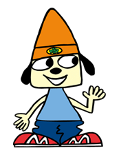
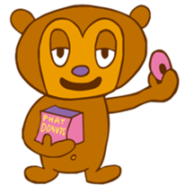

The Gang
PaRappa: The cheerful protagonist of the franchise.
Believes in himself, and following his acquisition of a hundred year supply
of noodles from a contest, he is now sick of them. Little does he know this
will lead to another adventure...

Sunny Funny: PaRappa's love interest. PaRappa distances himself away from her after she serves him noodles, but he still tries to win her heart back at any cost. Ends up reassuring him that she loves him in the end.
PJ Berri: PaRappa's best friend. He is laid-back and witty, as well as a big eater; and accompanies Parappa wherever he goes throughout most of the game.

Katy Kat: The leader, singer and bassist of MilkCan, as
well as one of PaRappa's closest friends. She and her bandmates end up
getting involved into one of the bad guys' plots and also help Parappa
throughout the game.

Lammy: The guitarrist of MilkCan. While usually shy and anxious, when she starts playing she steps into her confident persona. She gets involved into one of the events in the game and helps PaRappa out alongside Katy and Ma-san.

Ma-san: The short-tempered drummer of MilkCan. Ends up taking control of the Shrink Ray's remote during the events of Stage 3, inadvertently shrinking other characters and then gets involved in the hostage mission alongside Katy and Lammy.
The Teachers
Beard Burger Master: The deceased founder of Beard
Burgers, who loves burgers.
He is, however, still around as a ghost, and helps PaRappa cook some
burgers after seeing how his son is only selling noodles now.
Chop Chop Master Onion: After the events of UJL, CCMO is now back to work - now being the host of a TV Show called "Romantic Karate", which seems to be increasingly turning into a sensation.
Guru Ant: The world's smallest spiritual guru,
and the one to reach out to PaRappa and company after they get shrunk.
For someone who is supposedly enlightened, he sure doubts himself a
lot.
Sista Moosesha: The instructor at the military academy, who comes from a lineage of similarly mean instructors. Forces PaRappa and PJ to be under her watch during the events of Stage 4.
Hairdresser Octopus: The most popular hairdresser in all of PaRappa town, courtesy of his excitable attitude and terrific techniques. However, he also has quite the temper at times.
Colonel Noodle: The mastermind behind this game's events, and the son of Beard Burger Master. Due to his dad's obsession with burgers, he rebelled by becoming a fanatic of noodles instead, using hi-tech gadgets and a loyal group of minions to convince the world to love noodles.

MC King Kong Mushi: Following the events of the game, he most loved MC in all of PaRappa Town decides to gather PaRappa, his friends, rivals and teachers all together for a concert again.
Minor Characters
Boxy Boy: PaRappa's robotic boombox that can play music and talk. He appears in Practice mode, helping the player get the hang of the rhythm before each stage.
Captain Fussenpepper: Fussenpepper returns from Um Jammer Lammy, now working at the City Hall and helping you save the game, watch replays and change settings.
Noodle Mum: Beard Burger Master's wife and Colonel Noodle's mother. According to Colonel Noodle, she "turned into a burger".

Joe Chin: Makes small cameos both in-game and during cutscenes, getting with Sunny during PaRappa's daydreams as well.
The Gang
PaRappa: The very cute protagonist of the franchise. Believes in himself, and now hates noodles.